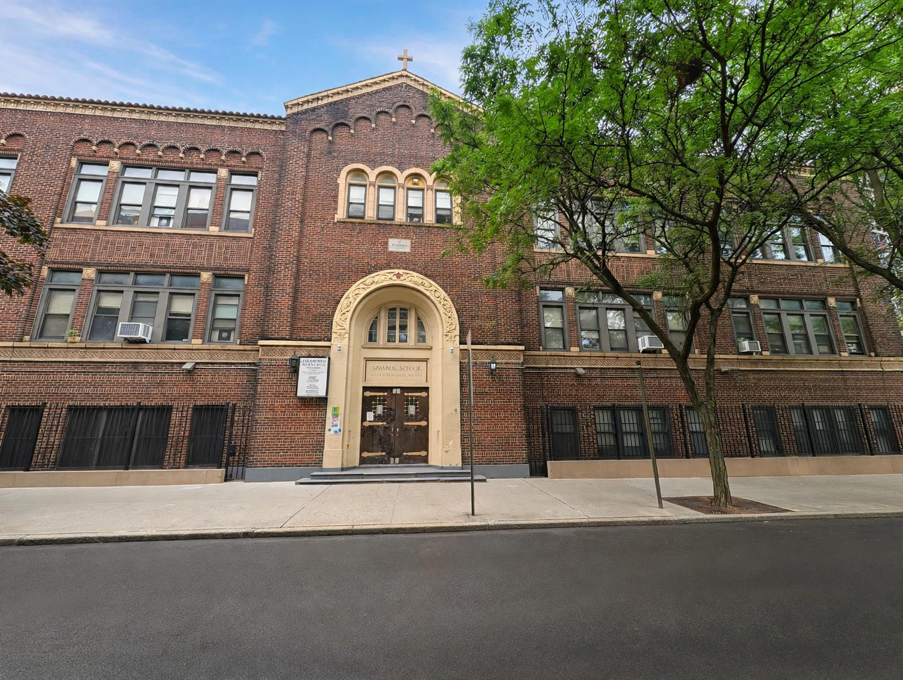

About Our Parish
A century of faith in the Bronx.
Welcome Home
We are a joyful, welcoming Catholic community in the Bronx, united in faith and committed to living the Gospel of Jesus Christ. Whether you are new to the parish, returning to the Church, or simply seeking a place to pray, you are always welcome here.
Here you will find information about our parish community, the celebration of the Sacred Liturgy and the Sacraments, parish ministries, faith formation, and opportunities to grow in your relationship with Jesus Christ.

Our Mission
To be a joyful, welcoming Catholic community in the Bronx — proclaiming the Gospel, celebrating the sacraments, and serving our neighbors with love.
Parish Facts
- Founded
- 1899
- Archdiocese
- Archdiocese of New York
- Served by
- The Apostles of Jesus since 2000
- Address
- 917 Morris Avenue, Bronx, NY 10451
Our History
Founded in 1899, St. Angela Merici Catholic Church has faithfully served the people of the Bronx for more than a century. Through changing times, our parish has remained a place of prayer, worship, and service, welcoming generations of families to encounter Christ through the Eucharist, the Sacraments, and the life of the Church.
St. Angela Merici
St. Angela Merici (1474–1540) was an Italian educator, mystic, and the foundress of the Company of St. Ursula, dedicated to the Christian education and formation of young women. Guided by deep faith, wisdom, and charity, she believed that education rooted in the Gospel could transform both individuals and society. Her example continues to inspire our parish.